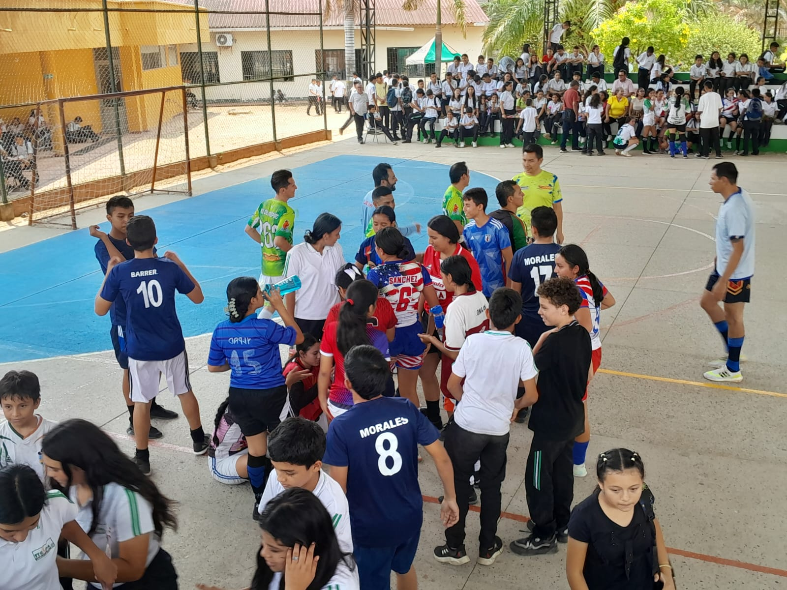
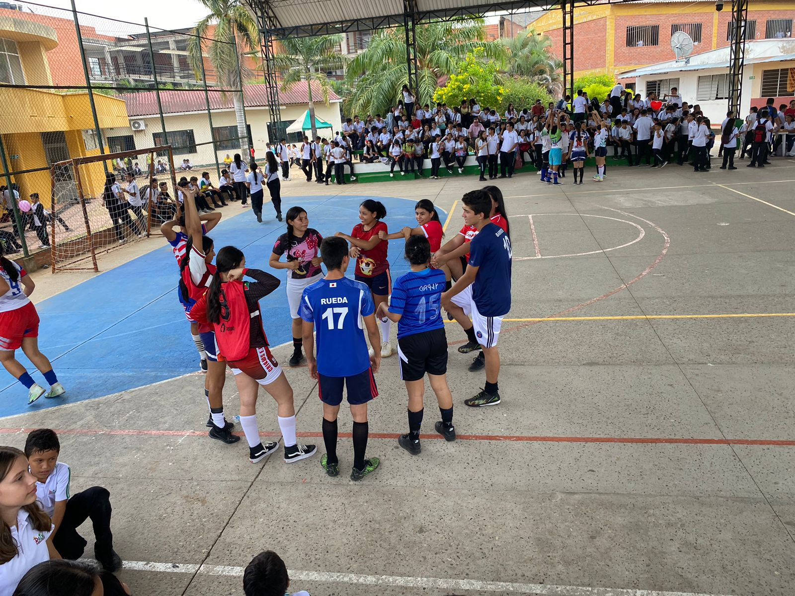

El 8 de marzo del año 2024 es una fecha emblemática en el calendario, pues se conmemora el Día Internacional de la Mujer, una ocasión para celebrar los logros, la valentía y el empoderamiento de las mujeres en todo el mundo. En el Instituto Técnico Industrial El Palmar, esta fecha no pasó desapercibida, y se organizó una jornada especial para honrar y reconocer la importancia de las mujeres en la sociedad y en la comunidad educativa. La jornada comenzó con normalidad, con clases regulares durante las primeras dos horas del día. Sin embargo, posteriormente se dio un espacio de dos horas para que cada grado pudiera celebrar el Día de la Mujer de manera significativa, junto a su respectivo director de grado. Este tiempo permitió que los estudiantes reflexionaran sobre la importancia del papel de las mujeres en sus vidas y en la sociedad en general, así como para reconocer y apreciar el valor de sus madres, hermanas, amigas y profesoras.
Celebrando la resiliencia femenina


Luego de estas celebraciones individuales por grado, todos los estudiantes se dirigieron al coliseo para participar en u